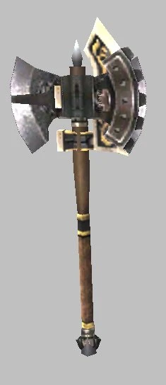
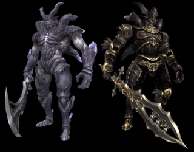

Description Dynamis - Xarcabard is a Dynamis area in Dynamis .
Notorious Monsters Name Level Drops Steal Family Spawns Notes Count Zaebos — One Hundred Byne Bill Lungo-Nango Jadeshell Montiont Silverpiece Copy of "Schultz Stratagems" Warrior's Lorica — KindredImage source 1 (Warrior ); A, L, T(S) Duke Berith — One Hundred Byne Bill Lungo-Nango Jadeshell Montiont Silverpiece Copy of "Schultz Stratagems" Duelist's Chapeau — KindredImage source 1 (Red Mage); A, L, T(S) Marquis Decarabia — One Hundred Byne Bill Lungo-Nango Jadeshell Montiont Silverpiece Copy of "Schultz Stratagems" Bard's Cannions — KindredImage source 1 (Bard); A, L, T(S) Duke Gomory — One Hundred Byne Bill Lungo-Nango Jadeshell Montiont Silverpiece Copy of "Schultz Stratagems" Melee Crown — KindredImage source 1 (Monk); A, L, T(S) Marquis Andras — One Hundred Byne Bill Lungo-Nango Jadeshell Montiont Silverpiece Copy of "Schultz Stratagems" Monster Gloves — KindredImage source 1 (Beastmaster) ; accompanied by Andras's Vouivre; A, L, T(S) Prince Seere — One Hundred Byne Bill Lungo-Nango Jadeshell Montiont Silverpiece Copy of "Schultz Stratagems" Cleric's Mitts — KindredImage source 1 (White Mage); A, L, T(S) Duke Scox — One Hundred Byne Bill Lungo-Nango Jadeshell Montiont Silverpiece Copy of "Schultz Stratagems" Abyss Burgeonet — KindredImage source 1 (Dark Knight); A, L, T(S) Marquis Gamygyn — One Hundred Byne Bill Lungo-Nango Jadeshell Montiont Silverpiece Copy of "Schultz Stratagems" Koga Tekko — KindredImage source 1 (Ninja); A, L, T(S) Marquis Orias — One Hundred Byne Bill Lungo-Nango Jadeshell Montiont Silverpiece Copy of "Schultz Stratagems" Sorcerer's Petasos — KindredImage source 1 (Black Mage); A, L, T(S) Count Raum — One Hundred Byne Bill Lungo-Nango Jadeshell Montiont Silverpiece Copy of "Schultz Stratagems" Assassin's Armlets — KindredImage source 1 (Thief ); A, L, T(S) Marquis Nebiros — One Hundred Byne Bill Lungo-Nango Jadeshell Montiont Silverpiece Copy of "Schultz Stratagems" Summoner's Horn — KindredImage source 1 (Summoner) ; accompanied by Nebiros's Avatar ; A, L, T(S) Marquis Sabnak — One Hundred Byne Bill Lungo-Nango Jadeshell Montiont Silverpiece Copy of "Schultz Stratagems" Valor Surcoat — KindredImage source 1 (Paladin); A, L, T(S) Count Vine — One Hundred Byne Bill Lungo-Nango Jadeshell Montiont Silverpiece Copy of "Schultz Stratagems" Saotome Kabuto — KindredImage source 1 (Samurai); A, L, T(S) King Zagan — One Hundred Byne Bill Lungo-Nango Jadeshell Montiont Silverpiece Copy of "Schultz Stratagems" Wyrm Armet — KindredImage source 1 (Dragoon) ; accompanied by Zagan's Wyvern; A, L, T(S) Marquis Cimeries — One Hundred Byne Bill Lungo-Nango Jadeshell Montiont Silverpiece Copy of "Schultz Stratagems" Scout's Jerkin — KindredImage source 1 (Ranger); A, L, T(S) Animated Hammer — Heavenly Fragment — 
Animated WeaponsImage source 1 A, L, T(S) Animated Staff — Celestial Fragment — Animated WeaponsImage source 1 A, L, T(S) Animated Longsword — Holy Fragment — Animated WeaponsImage source 1 A, L, T(S) Animated Tabar — Runaeic Fragment — Animated WeaponsImage source 1 A, L, T(S) Animated Great Axe — Seraphic Fragment — Animated WeaponsImage source 1 A, L, T(S) Animated Claymore — Intricate Fragment — Animated WeaponsImage source 1 A, L, T(S) Animated Spear — Stellar Fragment — Animated WeaponsImage source 1 A, L, T(S) Animated Scythe — Tenebrous Fragment — Animated WeaponsImage source 1 A, L, T(S) Animated Kunai — Demoniac Fragment — Animated WeaponsImage source 1 A, L, T(S) Animated Tachi — Divine Fragment — Animated WeaponsImage source 1 A, L, T(S) Animated Dagger — Ornate Fragment — Animated WeaponsImage source 1 A, L, T(S) Animated Knuckles — Mystic Fragment — Animated WeaponsImage source 1 A, L, T(S) Animated Longbow — Snarled Fragment — Animated WeaponsImage source 1 A, L, T(S) Animated Gun — Ethereal Fragment — Animated WeaponsImage source 1 A, L, T(S) Animated Horn — Mysterial Fragment — Animated WeaponsImage source 1 A, L, T(S) Animated Shield — Supernal Fragment — Animated WeaponsImage source 1 A, L, T(S) Ying — — — DragonsImage source 1 A, L, T(S) Yang — — — DragonsImage source 1 A, L, T(S)
Regular Monsters Name Level Drops Steal Family Spawns Notes Kindred Bard — One Byne Bill Tukuku Whiteshell Ordelle Bronzepiece Relic Armor One Byne Bill Tukuku Whiteshell Ordelle Bronzepiece KindredImage source — (Bard); A, L, T(S) Kindred Beastmaster — One Byne Bill Tukuku Whiteshell Ordelle Bronzepiece Relic Armor One Byne Bill Tukuku Whiteshell Ordelle Bronzepiece KindredImage source — (Beastmaster) ; acompanied by Kindred's Hound; A, L, T(S) Kindred Black Mage — One Byne Bill Tukuku Whiteshell Ordelle Bronzepiece Relic Armor One Byne Bill Tukuku Whiteshell Ordelle Bronzepiece KindredImage source — (Black Mage); A, L, T(S) Kindred Dark Knight — One Byne Bill Tukuku Whiteshell Ordelle Bronzepiece Relic Armor One Byne Bill Tukuku Whiteshell Ordelle Bronzepiece KindredImage source — (Dark Knight); A, L, T(S) Kindred Dragoon — One Byne Bill Tukuku Whiteshell Ordelle Bronzepiece Relic Armor One Byne Bill Tukuku Whiteshell Ordelle Bronzepiece KindredImage source — (Dragoon) ; acompanied by Kindred's Wyvern; A, L, T(S) Kindred Monk — One Byne Bill Tukuku Whiteshell Ordelle Bronzepiece Relic Armor One Byne Bill Tukuku Whiteshell Ordelle Bronzepiece KindredImage source — (Monk); A, L, T(S) Kindred Ninja — One Byne Bill Tukuku Whiteshell Ordelle Bronzepiece Relic Armor One Byne Bill Tukuku Whiteshell Ordelle Bronzepiece KindredImage source — (Ninja); A, L, T(S) Kindred Paladin — One Byne Bill Tukuku Whiteshell Ordelle Bronzepiece Relic Armor One Byne Bill Tukuku Whiteshell Ordelle Bronzepiece KindredImage source — (Paladin); A, L, T(S) Kindred Ranger — One Byne Bill Tukuku Whiteshell Ordelle Bronzepiece Relic Armor One Byne Bill Tukuku Whiteshell Ordelle Bronzepiece KindredImage source — (Ranger); A, L, T(S) Kindred Red Mage — One Byne Bill Tukuku Whiteshell Ordelle Bronzepiece Relic Armor One Byne Bill Tukuku Whiteshell Ordelle Bronzepiece KindredImage source — (Red Mage); A, L, T(S) Kindred Samurai — One Byne Bill Tukuku Whiteshell Ordelle Bronzepiece Relic Armor One Byne Bill Tukuku Whiteshell Ordelle Bronzepiece KindredImage source — (Samurai); A, L, T(S) Kindred Summoner — One Byne Bill Tukuku Whiteshell Ordelle Bronzepiece Relic Armor One Byne Bill Tukuku Whiteshell Ordelle Bronzepiece KindredImage source — (Summoner) ; acompanied by Kindred's Avatar; A, L, T(S) Kindred Thief — One Byne Bill Tukuku Whiteshell Ordelle Bronzepiece Relic Armor One Byne Bill Tukuku Whiteshell Ordelle Bronzepiece KindredImage source — (Thief); A, L, T(S) Kindred Warrior — One Byne Bill Tukuku Whiteshell Ordelle Bronzepiece Relic Armor One Byne Bill Tukuku Whiteshell Ordelle Bronzepiece KindredImage source — (Warrior); A, L, T(S) Kindred White Mage — One Byne Bill Tukuku Whiteshell Ordelle Bronzepiece Relic Armor One Byne Bill Tukuku Whiteshell Ordelle Bronzepiece KindredImage source — (White Mage); A, L, T(S) Vanguard Dragon — Ancient Currency Necropsyche — DragonsImage source 10 (Warrior); A, L, T(S) Dynamis Lord — One Hundred Byne Bill Lungo-Nango Jadeshell Montiont Silverpiece Shadow Mantle Shadow Ring Copy of "Schultz Stratagems" — 
Shadow LordsImage source 1 (Warrior,Monk,Red Mage,Dark Knight) ; accompanied by Ying and Yang.; A, L, T(S)
References External references describe their own server or retail rules. Documented Zenith changes take precedence.
Map credits: Map 1 — HorizonXI Wiki . Original game maps © SQUARE ENIX; redrawn maps retain the credited authorship and license.
Additional level-75 reference File:Map.jpg
Treasure
Monsters Found Here
Note: All monsters have True Sight and link.
Notes:
The above NMs are reported to have a higher drop rate of their job's AF2 and won't drop armor for other jobs.
Upon defeating the above NMs, the message "The prison of souls has set free its captive spirits!" will be displayed in the log. At this time:
Ying and Yang will spawn.A Statue Prototype will spawn that gives a 30 minute time extension.
Additionally, all Animated Weapons , required for the final relic weapon upgrade, will gain their full power; before defeating the NMs, they exist in a weakened state without added spawns. However, the weak versions drop nothing.
Notes:
Ying and Yang do not need to be killed in order to spawn the Dynamis Lord . However he will be immune to everything until they die.In order to kill Ying and Yang , they must be defeated almost simultaneously. Otherwise the dead dragon will be resummoned by its twin.
Dynamis Lord will also summon (weaker versions of) the twin dragons when being fought. These versions of Ying and Yang share, to an extent, hate with the Dynamis Lord , however, unlike the initial pair of Ying and Yang , this pair does not need to be killed to win. They will die when the Dynamis Lord is defeated.
Notes:
The Animated Weapons have the appearance of the final Relic Weapons .
Upon engaging in combat, the Animated Weapons will summon 4 Satellite Weapons of the same type to assist them.
The Animated Weapons have the ability to Warp if proper conditions are not met, this Warp ability can be interrupted.
Adapted from Eden Wiki: Dynamis - Xarcabard · Contributors and history · CC BY-SA 4.0 . Revision 8328. Layout, links and optional background text adapted for Zenith.